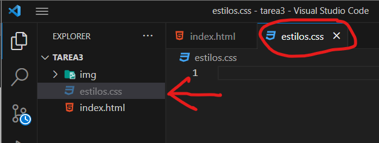
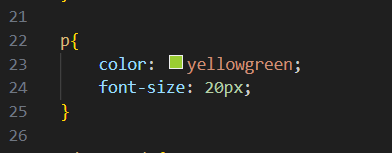

CSS (Cascading Style Sheets) es un lenguaje de estilo ampliamente utilizado en el desarrollo web. Se encarga de definir y controlar la apariencia visual de un sitio web, permitiendo personalizar colores, tipografías, diseños, márgenes y otros aspectos visuales de los elementos HTML.
Una de las principales ventajas de CSS es su capacidad para separar la estructura del contenido HTML de su presentación visual. Esto significa que podemos mantener el contenido y la estructura de nuestro sitio web en un archivo HTML y, al mismo tiempo, aplicar estilos personalizados a través de reglas CSS en un archivo separado.
CSS es una herramienta poderosa que nos permite dar vida a nuestros sitios web, personalizando su apariencia y mejorando la experiencia de los usuarios.
Es necesario crear un archivo separado para los estilos en CSS para mantener una estructura y organización adecuadas en nuestro proyecto. Al separar los estilos en un archivo aparte, podemos evitar la mezcla de código HTML y CSS en un solo archivo, lo que facilita la legibilidad y el mantenimiento del código. Al crear un archivo específico para los estilos en CSS, podemos definir reglas de estilo utilizando selectores y propiedades CSS. Estas reglas determinarán cómo se verán y se comportarán los elementos HTML en nuestro sitio web.  Una vez que hayamos creado nuestro archivo de estilos CSS, debemos vincularlo con nuestro archivo HTML principal, el archivo index.html. Para hacer esto, utilizamos la etiqueta < link> en la sección < head> del archivo HTML. La etiqueta < link> especifica la ubicación del archivo CSS y establece la conexión entre el archivo HTML y los estilos CSS definidos en el archivo separado, es importante asegurarse de que la ruta especificada en el enlace sea correcta y que el archivo de estilos esté ubicado en la misma carpeta o en la ruta adecuada.
La etiqueta link
La etiqueta se utiliza en el encabezado (head) de un archivo HTML para enlazar un archivo externo, como un archivo CSS o una fuente de texto, con la página web. Aquí tienes un ejemplo básico de cómo utilizar la etiqueta link:
< link rel="stylesheet" href="estilos.css">
< link>: Esta es la etiqueta de apertura de la etiqueta link.
rel="stylesheet": El atributo rel especifica la relación entre el archivo enlazado y la página web. En este caso, establecemos rel como "stylesheet" para indicar que estamos enlazando un archivo CSS.
href="estilos.css": El atributo href define la ruta o URL del archivo CSS que queremos enlazar. En este ejemplo, "styles.css" es el nombre del archivo CSS que se encuentra en el mismo directorio que el archivo HTML. Si el archivo CSS estuviera en una carpeta diferente, deberías especificar la ruta relativa o absoluta para llegar a él.
Es importante asegurarse de que la ruta especificada en el atributo href sea correcta y que el archivo CSS esté ubicado en la ubicación adecuada. Esto permitirá que el navegador cargue y aplique los estilos del archivo CSS correctamente en la página web.
Seleccion de elementos
La selección de elementos en CSS se refiere al proceso de identificar y elegir los elementos HTML a los que deseas aplicar estilos específicos. En CSS, puedes seleccionar elementos utilizando diferentes tipos de selectores.
Selector de etiquetas:
Selecciona todos los elementos que coinciden con una etiqueta específica. Por ejemplo, si se desea aplicar un estilo a todos los párrafos en tu página, se puede usar el selector de etiquetas p.

color: yellowgreen; font-size: 20px;
color: Esta propiedad define el color del texto dentro de un elemento. Se puede especificar el color utilizando nombres de color predefinidos (como "yellowgreen") o valores de color en formato hexadecimal (#RRGGBB) o RGB (rgb(R, G, B)).
font-size: Esta propiedad establece el tamaño de la fuente utilizada para el texto dentro de un elemento. Se puede especificar el tamaño utilizando unidades de medida como píxeles (px), puntos (pt), em, rem u otras unidades de medida relativas o absolutas.
Selector de clase
Selecciona elementos que tienen una clase específica asignada. Puedes aplicar la misma clase a varios elementos y luego seleccionarlos en conjunto. Para seleccionar elementos por clase, utiliza un punto seguido del nombre de la clase. Por ejemplo:
color: darkmagenta; Esta propiedad establece el color del texto en "darkmagenta", que es un tono oscuro de magenta. Todos los elementos con la clase "destacado" tendrán su texto en este color.
font-weight: bold; Esta propiedad establece el peso de la fuente en "bold" (negrita). Todos los elementos con la clase "destacado" tendrán su texto en negrita.
la regla .destacado se encarga de aplicar estilos visuales a todos los elementos con la clase "destacado". Estos estilos incluyen el color del texto en "darkmagenta" y la fuente en negrita.